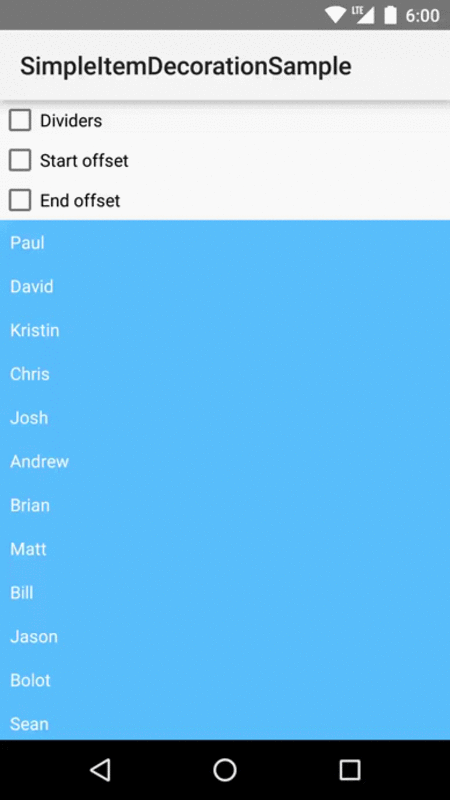
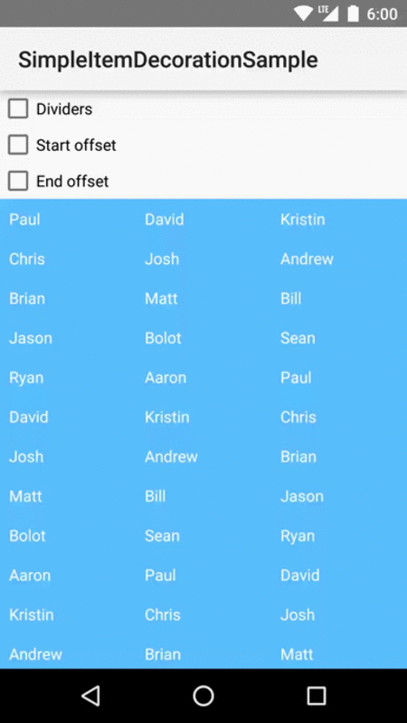

Simple Item Decoration
A library for adding dividers and offsets to Android's RecyclerView using RecyclerView.ItemDecoration.

Overview
Simple Item Decoration includes six ItemDecorations: start, end, and divider decoration for use with LinearLayoutManager; and start, end, and divider decoration for use with GridLayoutManager.
Instantiate one or more of these decoration and add to a standard RecyclerView.
Linear Decorations

DividerItemDecoration
DividerItemDecoration is used to add interior dividers to a linear RecyclerView. Its constructor takes in a divider as a Drawable.
recyclerView.setLayoutManager(new LinearLayoutManager(...));
Drawable dividerDrawable = ContextCompat.getDrawable(this, R.drawable.divider_sample);
recyclerView.addItemDecoration(new DividerItemDecoration(dividerDrawable));
StartOffsetItemDecoration
StartOffsetItemDecoration is used to add an offset to the start of a linear RecyclerView. If the RecyclerView is oriented vertically, the offset will be added to the top of the RecyclerView. If the RecyclerView is oriented horizontally, the offset will be added to the lefthand side of the RecyclerView. Its constructor takes in an offset in pixels.
recyclerView.setLayoutManager(new LinearLayoutManager(...));
int offsetPx = 10;
recyclerView.addItemDecoration(new StartOffsetItemDecoration(offsetPx));EndOffsetItemDecoration
EndOffsetItemDecoration is used to add an offset to the end of a linear RecyclerView. If the RecyclerView is oriented vertically, the offset will be added to the bottom of the RecyclerView. If the RecyclerView is oriented horizontally, the offset will be added to the righthand side of the RecyclerView. Its constructor takes in an offset in pixels.
recyclerView.setLayoutManager(new LinearLayoutManager(...));
int offsetPx = 10;
recyclerView.addItemDecoration(new EndOffsetItemDecoration(offsetPx));Grid Decorations

GridDividerItemDecoration
GridDividerItemDecoration is used to add interior dividers to a grid RecyclerView. Its constructor takes in horizontal and vertical dividers as Drawables, along with the number of grid columns.
int numColumns = 2;
Drawable horizontalDivider = ContextCompat.getDrawable(this, R.drawable.divider_horizontal);
Drawable verticalDivider = ContextCompat.getDrawable(this, R.drawable.divider_vertical);
recyclerView.setLayoutManager(new GridLayoutManager(..., numColumns));
recyclerView.addItemDecoration(new GridDividerItemDecoration(horizontalDivider, verticalDivider, numColumns));GridTopOffsetItemDecoration
GridTopOffsetItemDecoration is used to add an offset to the top of a grid RecyclerView. Its constructor takes in and offset in pixels and the number of grid columns.
int offsetPx = 10;
int numColumns = 2;
recyclerView.setLayoutManager(new GridLayoutManager(..., numColumns));
recyclerView.addItemDecoration(new GridTopOffsetItemDecoration(offsetPx, numColumns));GridBottomOffsetItemDecoration
GridBottomOffsetItemDecoration is used to add an offset to the bottom of a grid RecyclerView. Its constructor takes in an offset in pixels and the number of grid columns.
int offsetPx = 10;
int numColumns = 2;
recyclerView.setLayoutManager(new GridLayoutManager(..., numColumns));
recyclerView.addItemDecoration(new GridBottomOffsetItemDecoration(offsetPx, numColumns));Download
Gradle
compile 'com.bignerdranch.android:simple-item-decoration:1.0.0'Maven
<dependency>
<groupId>com.bignerdranch.android</groupId>
<artifactId>simple-item-decoration</artifactId>
<version>1.0.0</version>
</dependency>Contributing
Issues or Comments
If you have an idea for a feature enhancement or a bug fix, we'd love to know! We handle issue tracking using GitHub's issue system, so feel free to add your comment there.
Updates and Fixes
We also welcome all pull requests. Please open your pull request against master. We really love good commit messages and atomic commits.
License
The MIT License
Copyright (c) 2015 Big Nerd Ranch
Permission is hereby granted, free of charge, to any person obtaining a copy
of this software and associated documentation files (the "Software"), to deal
in the Software without restriction, including without limitation the rights
to use, copy, modify, merge, publish, distribute, sublicense, and/or sell
copies of the Software, and to permit persons to whom the Software is
furnished to do so, subject to the following conditions:
The above copyright notice and this permission notice shall be included in
all copies or substantial portions of the Software.
THE SOFTWARE IS PROVIDED "AS IS", WITHOUT WARRANTY OF ANY KIND, EXPRESS OR
IMPLIED, INCLUDING BUT NOT LIMITED TO THE WARRANTIES OF MERCHANTABILITY,
FITNESS FOR A PARTICULAR PURPOSE AND NONINFRINGEMENT. IN NO EVENT SHALL THE
AUTHORS OR COPYRIGHT HOLDERS BE LIABLE FOR ANY CLAIM, DAMAGES OR OTHER
LIABILITY, WHETHER IN AN ACTION OF CONTRACT, TORT OR OTHERWISE, ARISING FROM,
OUT OF OR IN CONNECTION WITH THE SOFTWARE OR THE USE OR OTHER DEALINGS IN
THE SOFTWARE.